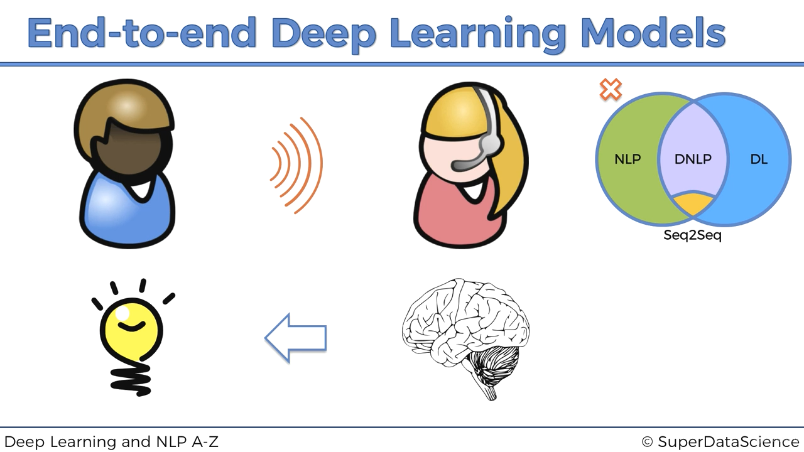
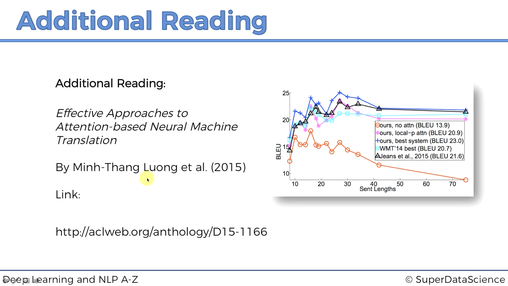

比较老，只到 seq2seq 模型，使用 python3.5 + tensorflow==1.0.0，API 也比较难，烂尾
1. Welcome to the course!
2. Deep NLP Intuition
2.3. Plan of Attack
2.4. Types of Natural Language Processing
2.5. Classical vs Deep Learning Models
- chatbot 检索式和生成式
- 非深度学习的语音识别 音频分量分析 识别人声频率
- 非深度学习的语音识别 音频分量分析 识别人声频率
- 词袋模型
记录单词出现次数，和结果关联，进行预测
- 词袋模型
- 用于文本识别的卷积神经网络
CNN 主要用于图像处理或视频处理
将出现的词转换为矩阵（通过词嵌入过程），对它们进行卷积运算
- 用于文本识别的卷积神经网络
- seq2seq
2.6. End-to-end Deep Learning Models


2.7. Bag-of-words model
2.8.-2.9. Seq2Seq Architecture
- 词袋只能输出 yes/no
- 词袋没有考虑到词序
- 固定大小的输出
为了突破词袋模型的这些限制（缺点），需要 RNNs（循环神经网络）
2.10. Seq2Seq Training
通过训练来更新这些参数 w u
2.11. Beam Search Decoding

贪婪算法，每次都选择概率最大的预测结果（生成的词）
Beam 算法，选择全局最优解（每次选择多个预测值，然后继续预测，选择所有可能中，总体概率-联合概率最大的）
2.12-2.13 Attention Mechanisms
前面所有向量最终训练出 hn 这个向量，用来解码，前面 n 个向量的信息都存入其中，但是当我们需要的输出变多，网络就越难提供适当的响应
引入注意力机制，即前面编码器训练时的数据都存入最终的那个向量，而我们如何让解码层能够使用这些编码器的向量，答案是通过注意力机制，给不同词向量不同的权重，然后通过权重和词向量计算出一个 x 因子，在解码器生成结果的时候可以被使用

3. Building a ChatBot with Deep NLP
3.1. ChatBot
安装 conda 和获取数据集
conda 创建 python3.5 的环境
conda create -n chatbot python=3.5 anaconda
activate chatbot
# tensorflow和protobuf有版本对应关系
pip install protobuf==3.1
pip install tensorflow==1.0.0
使用 conda 的 spyder 组件
新建文件
建议在桌面创建一个文件夹，然后双击进入
保存文件
获取康奈尔电影语料数据集(google: cornell movie dialogs corpus)
4. ———- PART 1 - DATA PREPROCESSING ———-
4.2. ChatBot - Step 4
标识一段对话，[]里是句子的 ID
# Building a ChatBot with Deep NLP
# Importing the libraries
import numpy as np
import tensorflow as tf
import re
import time
# PART 1 - DATA PREPROCESSING
# importing the dataset
lines = open('movie_lines.txt', encoding='utf-8', errors='ignore').read().split('\n')
conversations = open('movie_conversations.txt', encoding='utf-8', errors='ignore').read().split('\n')
print(lines[:3], conversations[:3])
4.4. ChatBot - Step 6
# creating a dictionary that maps each line and its id
'''
lines:
L1045 +++$+++ u0 +++$+++ m0 +++$+++ BIANCA +++$+++ They do not!
conversations:
u0 +++$+++ u2 +++$+++ m0 +++$+++ ['L194', 'L195', 'L196', 'L197']
'''
id2line = {}
for line in lines:
_line = line.split(' +++$+++ ')
if len(_line) == 5:
# L1045: They do not!
id2line[_line[0]] = _line[4]
print('L1045: ', id2line['L1045'])
4.5. ChatBot - Step 7
# creating a list of all the conversations
conversations_ids = []
# conversations里最后一行是空,所以用[:-1]来去掉
for conversation in conversations[:-1]:
# 用split()[-1]获取了 ['L194', 'L195', 'L196', 'L197']
# 用[1:-1]去掉[]
# replace去掉单引号和空格
_conversation = conversation.split(' +++$+++ ')[-1][1:-1] \
.replace("'", "").replace(' ', '')
# 将对话包含的句子id存入conversations_ids
conversations_ids.append(_conversation.split(','))
print(conversations_ids[:3])
4.6. ChatBot - Step 8
# getting separately the questions and the answers
questions = []
answers = []
for conversation in conversations_ids:
for i in range(len(conversation) - 1):
questions.append(id2line[conversation[i]])
answers.append(id2line[conversation[i + 1]])
print(questions[:3], answers[:3])
4.7. ChatBot - Step 9
# Doing a first cleaning of the texts
def clean_text(text):
text = text.lower()
text = re.sub(r"i'm", "i am", text)
text = re.sub(r"he's", "he is", text)
text = re.sub(r"she's", "she is", text)
text = re.sub(r"that's", "that is", text)
text = re.sub(r"what's", "what is", text)
text = re.sub(r"where's", "where is", text)
text = re.sub(r"\'ll", "will", text)
text = re.sub(r"\'ve", "have", text)
text = re.sub(r"\'re", "are", text)
text = re.sub(r"\'d", "would", text)
text = re.sub(r"won't", "will not", text)
text = re.sub(r"can't", "cannot", text)
text = re.sub(r"[-()\"#/@;:<>{}+=~|.?,]", "", text)
return text
4.8. ChatBot - Step 10
# Cleaning the questions
clean_questions = []
for question in questions:
clean_questions.append(clean_text(question))
# Cleaning the answers
clean_answers = []
for answer in answers:
clean_answers.append(clean_text(answer))
print(clean_questions[:3], clean_answers[:3])
4.9. ChatBot - Step 11
# Creating a dictionary that maps each word to its number of occurrences
word2count = {}
for question in clean_questions:
for word in question.split():
if word not in word2count:
word2count[word] = 1
else:
word2count[word] += 1
for answer in clean_answers:
for word in answer.split():
if word not in word2count:
word2count[word] = 1
else:
word2count[word] += 1
4.10. ChatBot - Step 12
# Creating two dictionaries tha map the questions words and the answer words to unique integer
# 过滤掉出现次数最少的词的比例
threshold = 20
questionswords2int = {}
# 编号
word_number = 0
for word, count in word2count.items():
if count >= threshold:
# word加入questionsword2int
questionsword2int[word] = word_number
# 获得编号
word_number += 1
answerswords2int = {}
# 编号
word_number = 0
for word, count in word2count.items():
if count >= threshold:
# word加入questionsword2int
answersword2int[word] = word_number
# 获得编号
word_number += 1
4.11. ChatBot - Step 13
# Adding the last tokens to these two dictionaries
tokens = ['<PAD>', '<EOS>', '<OUT>', '<SOS>']
for token in tokens:
questionswords2int[token] = len(questionswords2int) + 1
for token in tokens:
answerswords2int[token] = len(answerswords2int) + 1
4.12. ChatBot - Step 14
# Creating the inverse dictionary of the answerswords2int dictionary
answersints2word = {w_i: w for w, w_i in answerswords2int.items()}
4.13. ChatBot - Step 15
# Adding the End Of String token to the end of every answer
for i in range(len(clean_answers)):
clean_answers[i] += ' <EOS>'
4.14. ChatBot - Step 16
# Translating all the questions and the answers into integers
# and Replacing all the words that were filtered by <OUT>
questions_to_int = []
for question in clean_questions:
ints = []
for word in question.split():
if word not in questionswords2int:
# 被过滤的词
ints.append(questionswords2int['<OUT>'])
else:
ints.append(questionswords2int[word])
questions_to_int.append(ints)
answers_to_int = []
for answer in clean_answers:
ints = []
for word in answer.split():
if word not in answerswords2int:
# 被过滤的词
ints.append(answerswords2int['<OUT>'])
else:
ints.append(answerswords2int[word])
answers_to_int.append(ints)
print(questions_to_int[:3])
print(answers_to_int[:3])
4.15. ChatBot - Step 17
# Sorting questions and answers by the length of questions
sorted_clean_questions = []
sorted_clean_answers = []
# 选长度为1~25的语句来训练
for length in range(1, 25 + 1):
for i in enumerate(questions_to_int):
# i: (149212, [4879, 4207, 4879, 4207, 4879, 4207])
if len(i[1]) == length:
sorted_clean_questions.append(questions_to_int[i[0]])
sorted_clean_answers.append(answers_to_int[i[0]])
5. ———- PART 2 - BUILDING THE SEQ2SEQ MODEL ———-
5.3. ChatBot - Step 18
# Creating placeholder for the inputs and the targets
def model_inputs():
# 构建计算图
# placeholder()函数是在神经网络构建graph的时候在模型中的占位，
# 此时并没有把要输入的数据传入模型，它只会分配必要的内存
inputs = tf.placeholder(tf.int32, [None, None], name='input')
targets = tf.placeholder(tf.int32, [None, None], name='target')
# 学习率
lr = tf.placeholder(tf.float32, name='learning_rate')
# keep_prob表示input中的元素被保留下来的概率.
keep_prob = tf.placeholder(tf.float32, name='keep_prob')
return inputs, targets, lr, keep_prob
5.4. ChatBot - Step 19
# Preprocessing the targets
def preprocess_targets(targets, word2int, batch_size):
# tf.fill(dims, value, name=None)
'''
dims: 类型为int32的tensor对象，用于表示输出的维度(1-D, n-D)，通常为一个int32数组，如：[1], [2,3]等
value: 常量值(字符串，数字等)，该参数用于设置到最终返回的tensor对象值中
name: (可选)当前操作别名
'''
# 第一列填充为<SOS>字符串开头
left_side = tf.fill([batch_size, 1], word2int['<SOS>'])
# 使用 tf.strided_slice 通过在张量维度上“跨步”来提取张量切片
# 输入数据，开始切片处，终止切片处，步长
# 步长为[1,1] -> 获取所有
# 截掉最后一列
right_side = tf.strided_slice(targets, [0, 0], [batch_size, -1], [1, 1])
# 拼接(axis=1 -> 列)
preprocessed_targets = tf.concat([left_side, right_side], 1)
return preprocessed_targets
5.5. ChatBot - Step 20
# Creating the Encoder RNN Layer
def encoder_run_layer(rnn_inputs, rnn_size, num_layers, keep_prob,
sequence_length):
'''
这个函数实现的最基本的LSTM函数的功能，即上面说的功能，不加peephole连接。
peephole连接是在每个门都加入细胞状态信号。
'''
lstm = tf.contrib.rnn.BasicLSTMCell(rnn_size)
# dropout是在训练时停用一定百分比的神经元
lstm_dropout = tf.contrib.rnn.DropoutWrapper(lstm,
input_keep_prob=keep_prob)
# 由多个简单的cells组成的RNN cell。用于构建多层循环神经网络
encoder_cell = tf.contrib.rnn.MultiRNNCell([lstm_dropout] * num_layers)
# 创建双向递归神经网络的动态版本
# fw和bw表示两个方向
_, encoder_state = tf.nn.bidirectional_dynamic_rnn(
cell_fw=encoder_cell,
cell_bw=encoder_cell,
sequence_length=sequence_length,
inputs=rnn_inputs,
dtype=tf.float32)
return encoder_state
5.6. ChatBot - Step 21
# Decoding the training set
# 训练集解码
def decode_training_set(encoder_state, decoder_cell, decoder_embedded_input,
sequence_length, decoding_scope, output_function,
keep_prob, batch_size):
# 初始化
# tf.zeros(shape, dtype=tf.float32, name=None)
attention_states = tf.zeros([batch_size, 1, decoder_dell.output_size])
attention_keys, attention_values,
attention_score_function,
attention_construct_function = \
tf.contrib.seq2seq.prepare_attention(
attention_states,
attention_option='bahdanau',
num_units=decoder_cell.output_size
)
# attention的计算
training_decoder_function = \
tf.contrib.seq2seq.attention_decoder_fn_train(
encoder_state[0],
attention_keys,
attention_values,
attention_score_function,
attention_construct_function,
name='attn_dec_train'
)
decoder_output,decoder_final_state,decoder_final_context_state=\
tf.contrib.seq2seq.dynamic_rnn_decoder(decoder_cell,
training_decoder_function,
decoder_embedded_input,
sequence_length,
scope=decoding_scope)
decoder_output_dropout = tf.nn.dropout(decoder_output, keep_prob)
return output_function(decoder_output_dropout)
5.7. ChatBot - Step 22
# Decoding the test/validation set
def decode_test_set(encoder_state, decoder_cell, decoder_embedded_matrix,
sos_id, eos_id, maximum_length, num_words, sequence_length,
decoding_scope, output_function, keep_prob, batch_size):
# 初始化
# tf.zeros(shape, dtype=tf.float32, name=None)
attention_states = tf.zeros([batch_size, 1, decoder_dell.output_size])
attention_keys, attention_values,
attention_score_function,
attention_construct_function = \
tf.contrib.seq2seq.prepare_attention(
attention_states,
attention_option='bahdanau',
num_units=decoder_cell.output_size
)
# attention的计算
test_decoder_function = \
tf.contrib.seq2seq.attention_decoder_fn_inference(
output_function,
encoder_state[0],
attention_keys,
attention_values,
attention_score_function,
attention_construct_function,
decoder_embedded_matrix,
sos_id,
eos_id,
maximum_length,
num_words,
name='attn_dec_inf'
)
test_predictions, decoder_final_state, decoder_final_context_state = \
tf.contrib.seq2seq.dynamic_rnn_decoder(decoder_cell,
test_decoder_function,
scope=decoding_scope)
return test_predictions
5.8. ChatBot - Step 23
# Creating the Decoder RNN
def decoder_rnn_layer(deocder_embedded_input, decoder_embedding_matrix,
encoder_state, num_words, sequence_length, rnn_size,
num_layers, word2int, keep_prob, batch_size):
with tf.variable_scope("decoding") as decoding_scope:
lstm = tf.contrib.rnn.BasicLSTMCell(rnn_size)
lstm_dropout = tf.contrib.rnn.DropoutWrapper(lstm,
input_keep_prob=keep_prob)
decoder_cell = tf.contrib.rnn.MultiRNNCell([lstm_dropout] * num_layers)
# 初始化全连接层的神经元相关权重
weights = tf.truncated_normal_initializer(stddev=0.1) # 正态分布的初始化
biases = tf.zeros_initializer()
output_function = lambda x: tf.contrib.layers.fully_connected(
x,
num_words,
None,
scope=decoding_scope,
weights_initializers=weights,
biases_initializer=biases)
training_predictions = decode_training_set(encoder_state, decoder_cell,
decoder_embedded_input,
sequence_length,
decoding_scope,
output_function, keep_prob,
batch_size)
decoding_scope.reuse_variables()
test_predictions = decode_test_set(
encoder_state, decoder_cell, decoder_embedded_matrix,
word2int['<SOS>'], word2int['<EOS>'], sequence_length - 1,
num_words, decoding_scope, output_function, keep_prob, batch_size)
return training_predictions, test_predictions
5.9. ChatBot - Step 24
# Building the seq2seq model
def seq2seq_model(inputs, target, keep_prob, batch_size, sequence_length,
answers_num_words, questions_num_words,
encoder_embedding_size, decoder_embedding_size, rnn_size,
num_layers, questionsword2int):
encoder_embedded_input = tf.contrib.layers.embed_sequence(
inputs,
answers_num_words + 1,
encoder_embedding_size,
initializer=tf.random_uniform_initializer(0, 1))
encoder_state = encoder_runn_layer(encoder_embedded_input, rnn_size,
num_layers, keep_prob, sequence_length)
preprocessed_targets = preprocess_targets(targets, questionswords2int,
batch_size)
# 0~1随机数填充Variable
decoder_embeddings_matrix = \
tf.Variable(tf.random_uniform([questions_num_words + 1, decoder_embedding_size], 0,1))
decoder_embedded_input = tf.nn.embedding_lookup(decoder_embeddings_matrix,
preprocessed_targets)
training_predictions, test_predictions = \
decoder_rnn_layer(
docoder_embedded_input, decoder_embeddings_matrix, encoder_state,
questions_length, rnn_size, num_layers, questionswords2int, keep_prob,
batch_size
)
return training_predictions, test_predictions
6. ———- PART 3 - TRAINING THE SEQ2SEQ MODEL ———-
6.3. ChatBot - Step 25
# Setting the Hyperparameter
epochs = 100
batch_size = 64
rnn_size = 512
num_layers = 3
encoding_embedding_size = 512
decoding_embedding_size = 512
learing_rate = 0.01
# 训练迭代每次学习率降低的比率
learing_rate_decay = 0.9
# 最小学习率
min_learing_rate = 0.0001
keep_probability = 0.5
6.4. ChatBot - Step 26
# Defining a session
tf.reset_default_graph()
session = tf.InteractiveSession()
6.5. ChatBot - Step 27
# Loading the model inputs
inputs,targets,lr,keep_prob=model_inputs()
6.6. ChatBot - Step 28
# Setting the sequence length
sequence_length = tf.placeholder_with_default(25, None, name='sequence_length')
6.7. ChatBot - Step 29
# Getting the shape of the input tensor
input_shape = tf.shape(inputs)
6.8. ChatBot - Step 30
# Getting the training and test predictions
training_predictions, test_predictions = seq2seq_model(
tf.reverse(inputs, [-1]), targets, keep_prob, batch_size, sequence_length,
len(answerswords2int), len(questionswords2int), encoding_embedding_size,
decoding_embedding_size, rnn_size, num_layers, questionswords2int)
6.9. ChatBot - Step 31
# Setting up the Loss Error, the Optimizer and Gradient Clipping
with tf.name_scope("optimization"):
loss_error = tf.contrib.seq2seq.sequence_loss(
training_predictions, targets,
tf.ones([input_shape[0], sequence_length]))
optimizer = tf.train.AdamOptimizer(learning_rate)
grdients = optimizer.compute_grdients(loss_error)
# clip_by_value( ,最低，最高，)
clipped_gradients = [(tf.clip_by_value(grad_tensor, -5.,
5.), grad_variable)
for grad_tensor, grad_variable in gradients
if grad_tensor is not None]
optimizer_gradient_clipping = optimizer.apply_gradients(clipped_gradients)
6.10. ChatBot - Step 32
# Padding the sequences with the <PAD> token
# 让句子都有相同的长度
# Question: ['Who','are','you',<PAD>,<PAD>,<PAD>,<PAD>]
# Answer: [<SOS>,'I','am','a','bot','.',<EOS>,<PAD>]
def apply_padding(batch_of_sequences, word2int):
max_sequence_length = max(
[len(sequence) for sequences in batch_of_sequences])
return [
sequence + [word2int['<PAD>']] * (max_sequence_length - len(sequence))
for sequence in batch_of_sequences
]
6.11. ChatBot - Step 33
# Splitting the data into batches of questions and answers
def split_into_batches(questions, answers, batch_size):
for batch_index in range(0, len(questions) // batch_size):
start_index = batch_index * batch_size
questions_in_batch = questions[start_index:start_index + batch_size]
answers_in_batch = answers[start_index:start_index + batch_size]
padded_questions_in_batch = np.array(
apply_padding(questions_in_batch, questionswords2int))
padded_answers_in_batch = np.array(
apply_padding(answers_in_batch, answerswords2int))
yield padded_questions_in_batch, padded_answers_in_batch
6.12. ChatBot - Step 34
# Splitting the questions and answers into training and validation sets
training_validation_split = int(len(sorted_clean_questions) * 0.15)
training_questions = sorted_clean_questions[training_validation_split:]
training_answers = sorted_clean_answers[training_validation_split:]
validation_questions = sorted_clean_questions[:training_validation_split]
validation_answers = sorted_clean_answers[:training_validation_split]
6.13. ChatBot - Step 35
# Training
batch_index_check_training_loss = 100
batch_index_check_validation_loss = (
(len(training_questions)) // batch_size // 2) - 1
total_training_loss_error = 0
list_validation_loss_error = []
early_stopping_check = 0
early_stopping_stop = 1000
checkpoint = "chatbot_weights.ckpt"
sesssion.run(tf.global_variables_initializer())
for epoch in range(1, epochs + 1):
for batch_index, (padded_questions_in_batch,
padded_answers_in_batch) in enumerate(
split_into_batches(training_questions,
training_answers, batch_size)):
starting_time = time.time()
_, batch_training_loss_error = session.run(
[optimizer_gradient_clipping, loss_error], {
inputs: padded_questions_in_batch,
target: padded_answers_in_batch,
lr: learning_rate,
sequence_length: padded_answers_in_batch.shape[1],
keep_prob: keep_probability
})
total_training_loss_error += batch_training_loss_error
ending_time = time.time()
batch_time = ending_time - starting_time
if batch_index % batch_index_check_training_loss == 0:
print(
'Epoch: {:>3}/{}, Batch: {:>4}/{}, Training Loss Error: {:>6.3f}, Training Time on 100 Batches: {:d} seconds'
.format(
epoch, epochs, batch_index,
len(training_questions) // batch_size,
total_training_loss_error /
batch_index_check_training_loss,
int(batch_time * batch_index_check_training_loss)))
total_training_loss_error = 0
if batch_index % batch_index_check_validation_loss == 0 and batch_index > 0:
total_validation_loss_error = 0
starting_time = time.time()
for batch_index_validation, (padded_questions_in_batch,
padded_answers_in_batch) in enumerate(
split_into_batches(
validation_questions,
validation_answers,
batch_size)):
batch_validation_loss_error = session.run(
loss_error, {
inputs: padded_questions_in_batch,
target: padded_answers_in_batch,
lr: learning_rate,
sequence_length: padded_answers_in_batch.shape[1],
keep_prob: 1
})
total_validation_loss_error += batch_validation_loss_error
ending_time = time.time()
batch_time = ending_time - starting_time
average_validation_loss_error / (len(validation_questions) /
batch_size)
print(
"Validation Loss Error: {:>6.3f}, Batch Validation Time: {:d} seconds"
.format(average_validation_loss_error, int(batch_time)))
learning_rate *= learning_rate_decay
if learning_rate < min_learning_rate:
learning_rate = min_learning_rate
list_validation_loss_error.append(average_validation_loss_error)
if average_validation_loss_error <= min(
list_validation_loss_error):
print('I speak better now!!')
early_stopping_check = 0
saver = tf.train.Saver()
saver.save(session, checkpoint)
else:
print('Sorry I do not speak better, I need to practice more.')
early_stopping_check += 1
if early_stopping_check == early_stopping_stop:
break
if early_stopping_check == early_stopping_stop:
print(
"My apologies, I cannot speak better anymore. This is the best I can do."
)
break
print("Game Over")